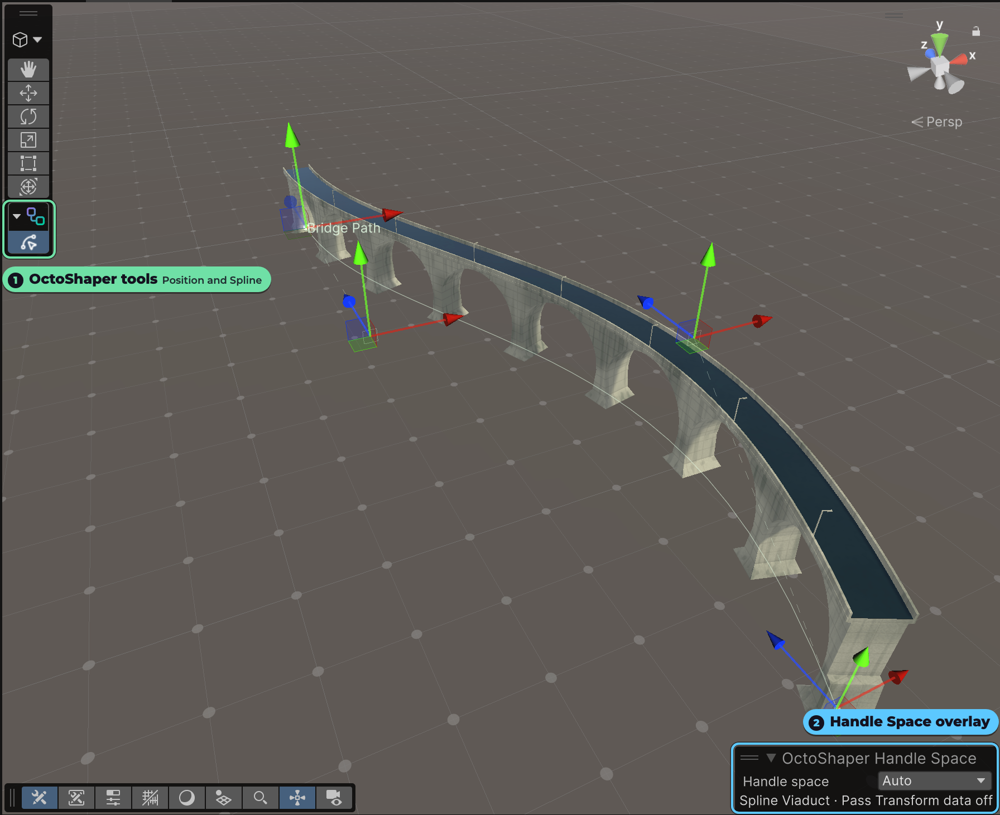

Context Manipulation
Some graph values are easier to understand and edit in the scene than as fields in the graph. OctoShaper's Scene view context provides visual manipulators for compatible values, alongside read-only gizmos for inspecting a node's output.
Open the OctoShaper tool context
- Open a graph in the OctoShaper editor, or select a GameObject with a
ProceduralGraphExecutor. - In the Scene view toolbar, open the tool-context menu and choose OctoShaper.
- Choose the manipulation tool appropriate for the value you want to edit, then use its handles in the scene.
Know which graph receives the edit
When the OctoShaper editor is open, its current graph and configuration provide the editing context. Otherwise, the tools use the selected ProceduralGraphExecutor.
Configuration first, graph default second
If an active configuration is available, moving a handle writes a parameter override to that configuration. Without one, it changes the parameter's default value in the graph asset.
Manipulate values in context
A manipulator decides which compatible graph values it can display and how they can be edited. Its handles stay connected to the underlying parameter, so changes made in the Scene view are reflected in the same graph or configuration value you would edit numerically.
Example: shaping a spline
The spline manipulator draws the path, anchors, Bezier controls, and their relationships directly in the scene. It illustrates the general principle: the manipulator presents a visual editing surface, while the parameter remains the source of truth.
For the spline data type itself, continue with Working with Splines.
Position and spline tools
In 1.2 the tools are grouped in the OctoShaper Tools overlay on every supported Unity version:
- OctoShaper Position drags Vector3 and float3 parameters.
- OctoShaper Spline edits spline parameters: anchors, tangents and the path.
They are available when an executor is selected or its Preview Stage is open. Handles follow the graph's authoring space and keep their icons after script reloads. Every drag supports Undo.
OctoShaper Handle Space chooses how a handle maps to the graph: Auto (default), World, Input position or Input transform. Auto handles Local assembly graphs and direct spline distribution. Pick Input transform for a template placed with Place Local Assembly. See Assemblies and placement.

Editable handles and output gizmos are different
Parameter manipulators write back to compatible values. Use them when authoring graph inputs that benefit from direct visual editing.
Output gizmos are read-only. A selected node can display bounds, positions, rotations, scales, and triangle information from its ElementSet output. These markers explain the data without editing it.
Pin the context you need
Pin scene preview keeps a node's realized visual result in the scene while you work elsewhere in the graph. Pin gizmos keeps that node's diagnostic markers and bounds visible instead. The two controls are independent, so you can keep either form of context—or both—while selecting another node.